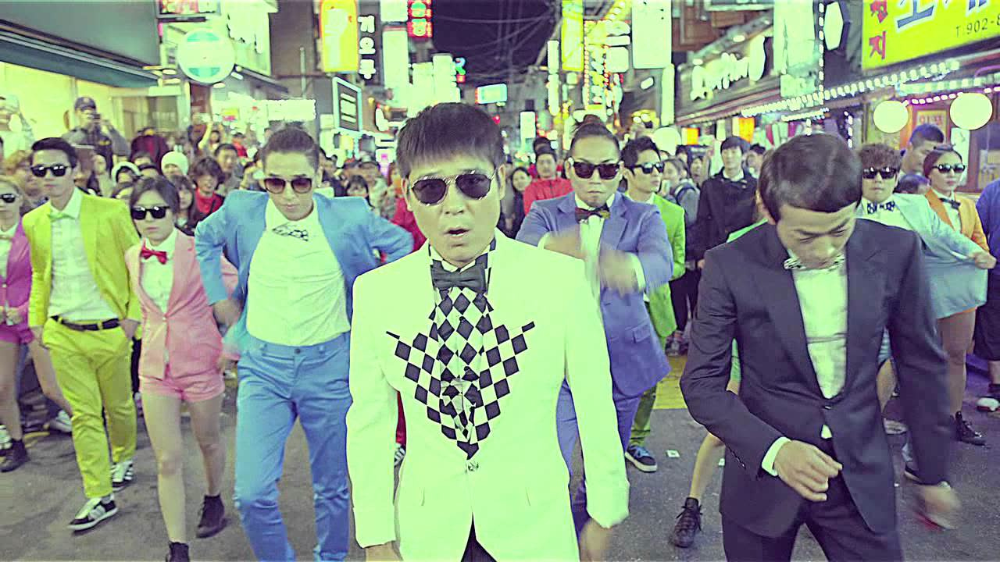
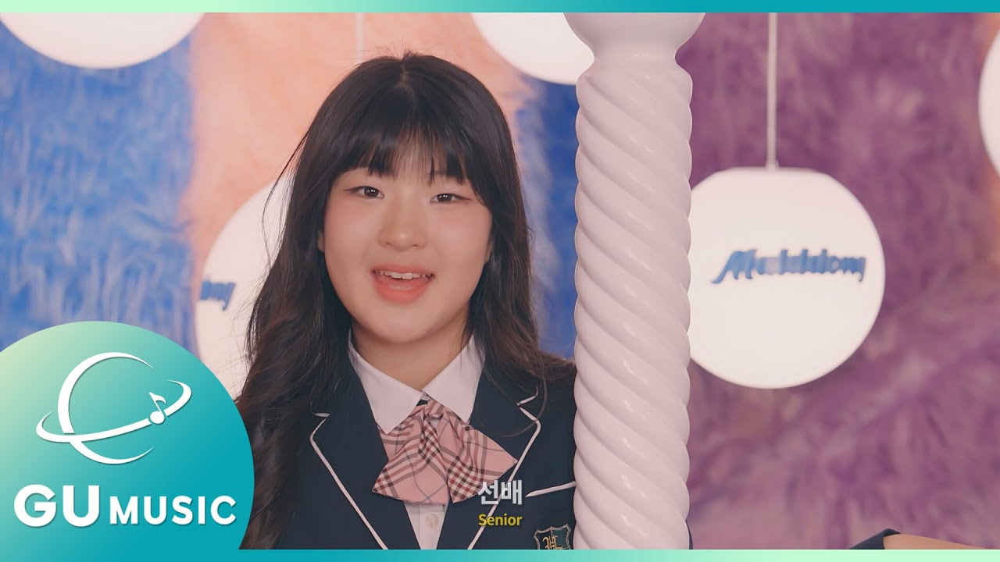
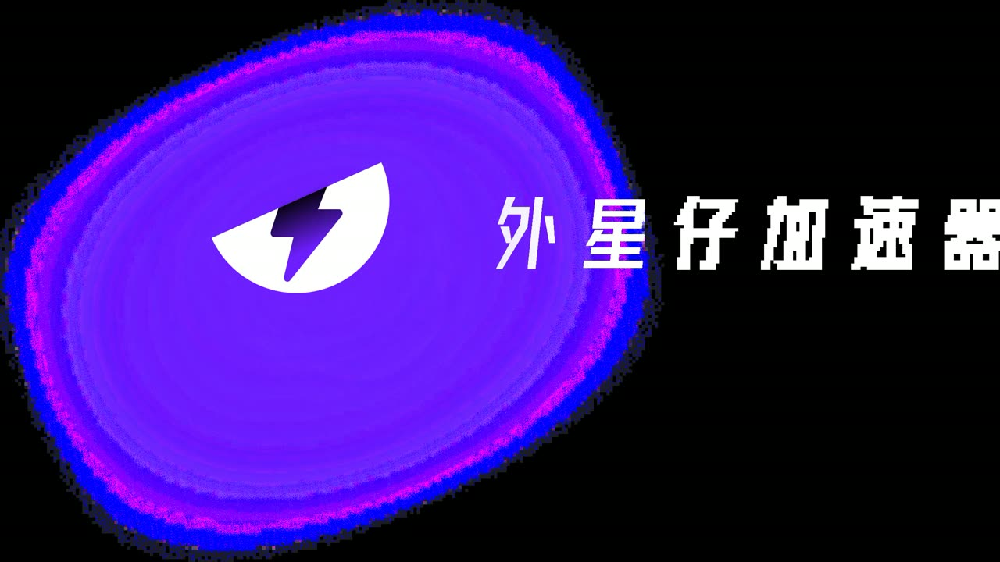

ドラマ · 2023

ドクター・チャ・ジョンスク（2023）
20年間主婦として生きてきたチャ・ジョンスクが、肝臓病を乗り越えて医師の道に戻り、夫の病院で1年目の研修医として働き始める。2023年のJTBC医療ドラマ。オム・ジョンファ、キム・ビョンチョル主演。
中国大陸からご覧になる場合は、こちらから Netflix にアクセスできます。
当サイトは海賊版を提供したり、リンクしたりしません。
あの投稿
v.douyin.com/ETkls6EwUXo/
ステージのことも、新曲のことも出てこない。ただ猫のことだけ。整っているとは言えない一言なのに、「好き」という気持ちを地面に引き戻してくれる。
K-POP を聴き、韓国ドラマを追いかけていると、ときどき聞かれる。「結局、どこが好きなの？」たいていは笑って流してきた。でも今回は、ちゃんと答えたい。
だからこのページを作った。弁護でも、紹介パンフでもなく、「理由」という二文字を、ただ広げて書いてみただけ。
注：本サイトは個人の意見ページです。確認できていないデータは引用せず、いかなる団体も代表しません。
四つの理由
善意は細部にある
目立たない猫用の器、片付けられなかった段ボール、冬になっても撤去されない小さな小屋。胸が緩むのは立派なスローガンではなく、ありがとうも言えない命のために、誰かが一度腰をかがめることだ。
そういう腰のかがめ方が、私は好きだ。
いちばん小さいものへの向き合い方
建物は高くてもいいし、灯りは明るくてもいい。でも気になるのは、話せず、お返しもできず、要求すらできないその一匹が、この街の考慮に入っているかどうかだ。
猫はとても軽い物差しなのに、重いものを量れる。
好きだからといって無条件ではない
ある場所が好きだということは、そのすべてを弁護することでも、完璧だと思い込むことでもない。どこにも複雑な面がある。加工済みの一枚絵ではなく、現実の国として見ることこそが、好きになる前提だと思う。
好きに値する具体的な瞬間を好きになりながら、自分の判断は手放さない——それが「理由がある」ということだ。
自分の足元へ持ち帰る
画面の中だけで終わるなら、その気持ちはあまりに軽い。心が動いたあと、人は自分の家の下で小さなことをしたくなる。きれいな水を一碗、飼い猫を手放さないこと、買うのではなく保護猫を迎えること、冬の段ボールに古いセーターを敷くこと。
好きであることのいちばん良い形は、自分まで少し優しくなることだ。
小さなこと
善意は、大きなことじゃなくていい。
日が暮れたら誰かのために少し光を残しておく、それだけのこともある。
この灯りを、あなたがともした回数は 0 回です。
この数字はあなたのブラウザの中だけにあります。アップロードも通信もしませんし、他の誰かを表すものでもありません。ただ、小さなところから始められるよ、という合図です。
もっと読む
いずれも公開されているページで、参考リンクとして挙げているだけです。本サイトはその中の事実・数値・時点の正確さについて検証も保証もせず、それらに基づく主張も行いません。
運営が選ぶ
マイナーな韓国アーティストを優先的におすすめ
韓国ドラマを見る
ドラマ · 2023
20年間主婦として生きてきたチャ・ジョンスクが、肝臓病を乗り越えて医師の道に戻り、夫の病院で1年目の研修医として働き始める。2023年のJTBC医療ドラマ。オム・ジョンファ、キム・ビョンチョル主演。
中国大陸からご覧になる場合は、こちらから Netflix にアクセスできます。
当サイトは海賊版を提供したり、リンクしたりしません。
映画・ドラマ
アルツハイマーを患ったムンヒおばあちゃんは、孫娘が巻き込まれたひき逃げ事故の唯一の目撃者。衰えていく記憶と戦いながら、息子とともに犯人を追います。2020年の韓国映画。笑いと涙が、ひとりの老人に宿ります。
中国大陸からご覧になる場合は、こちらから Netflix にアクセスできます。
当サイトは海賊版を提供したり、リンクしたりしません。
ドラマ · 2015

名門高校のダンス部と粗暴な白虎部が合併してチアリーディング部になり、ぶつかり合いながら若者たちは成長し、恋に落ちる。2015年のKBS月火ドラマ。ジョンウンジ、イ・ウォングン主演。
中国大陸からご覧になる場合は、こちらから Netflix にアクセスできます。
当サイトは海賊版を提供したり、リンクしたりしません。
ドラマ · 2013

400年前に朝鮮へ降り立った異星人が、大学教授ト・ミンジュンとして今を生き、トップ女優チョン・ソンイと星を越えた恋をする。2013年のSBS水木ドラマ。キム・スヒョン、チョン・ジヒョン主演。
当サイトは海賊版を提供したり、リンクしたりしません。
ドラマ · 2013

貧しくても誇り高いチェ・ウンサンが、アメリカから帰国した財閥の相続人キム・タンと高校で再会。若者たちは王冠の重さを秤にかける。2013年のSBS水木ドラマ。イ・ミンホ、パク・シネ主演。
当サイトは海賊版を提供したり、リンクしたりしません。
ドラマ · 2003
宮女チャングムが料理と医術で身分の偏見を乗り越え、王の初の女性主治医になる。2003年のMBC時代劇。イ・ヨンエ、チ・ジニ主演。
中国大陸からご覧になる場合は、こちらから Netflix にアクセスできます。
当サイトは海賊版を提供したり、リンクしたりしません。
K-popを聴く
韓国音楽 · 2013

シンサドンホリャンイが手がけた、イム・チャンジョンとキム・チャンリョルが歌う洗脳系ダンスナンバー。SUPER JUNIOR のヒチョルをはじめ U-KISS、キム・スロなど数十組のスターがカメオ出演し、簡単な振り付けについつい体が揺れます。2013年リリース、「江南スタイルを超えた神曲」と呼ばれた一曲。
運営者の QQ音楽リンク（中国大陸のみ視聴可）：y.qq.com。
韓国音楽

韓国インディーズ歌手 Minty の「Arcadia（아르카디아）」。1theK チャンネル公開の、軽やかで清々しいマイナーナンバー。
MV は YouTube で公開。
韓国音楽

韓国歌手 SEO EVE の「마라탕후루（麻辣糖葫芦）」。Green Universe Music 制作、中毒性のあるバイラル系のマイナーヒット。
MV は YouTube で公開。
韓国音楽

韓国新人グループ U.sso.boy の「Let’s Go Now」。4D Label 制作、エネルギッシュなマイナーダンス系。
MV は YouTube で公開。
韓国音楽

ダンス神童ナ・ハウンの 2018 年処女シングル「So Special (feat. Microdot)」。マイクロドットがラップで参加したエレクトロポップ・ダンス曲。
MV は YouTube で公開。
韓国音楽

韓国チルドレングループ 7プリンセスの「우유송（牛乳の歌）」。シンプルで耳に残り、アジア全域で広がった一曲。
MV は YouTube で公開。
韓国音楽
韓国ネタソング「짜라빠빠」。ゲキツ（kuso）ダンス動画で再ブレイク。正確な歌唱バージョンは不詳で、1985 年のチョン・グァンテ版や子供向けカバーもあるため、ここでは断定しない。
MV は YouTube で公開。
中国大陸以外からご覧の方は、こちらから YouTube で「문을 여시오」の MV をご覧ください。
K-POP プラットフォーム

韓国の K-POP メディアプラットフォームで、YouTube、X、Instagram、Facebook などで 3500 万人の登録者を擁します。K-POP アーティストのライブパフォーマンス、ダンスビデオ、バラエティ番組、インタビューを提供。中国語、日本語、英語、韓国語の 4 言語に対応。
1theK は韓国本土のプラットフォームで、VPN なしでアクセス可能、4 言語インターフェースに対応。
PC ゲーム
韓国 · Netmarble · 2025

同名の人気ウェブトゥーンを原作としたアクション RPG。最弱のハンター程肖宇が覚醒していく過程を、原作に忠実なストーリーと爽快なアクションバトルで体験。4 人協力の団戦も楽しめる。
Netmarble 発売、Steam で配信中。
韓国 · Shift Up · 2024

Shift Up が開発し Sony が発売したアクションアドベンチャー。プレイヤーはイヴとなり、外星生物に侵略されたポスト・アポカリプスの地球で戦闘と探索を展開。華麗なアクションデザインとキャラクターモデリングで知られる。
当初 PlayStation 限定タイトルだった剣星は、2024 年に Steam に登場。中国語インターフェースに対応。
韓国 · Neowiz · 2023

Neowiz が開発したソウルズライクアクション RPG。ピノキオの童話をダークファンタジー世界で再構築。精美なゴシック美術と確かな戦闘手感で、韓国 3A ゲームの金字塔と称される。
Lies of P は Steam、PlayStation、Xbox などでプレイ可能。中国語インターフェースと字幕に対応。
韓国 · VALOFE · 2021

VALOFE が手がけるマルチプレイヤーオンラインオープンワールドアクション。広大なフィールドを仲間と探索し、チームダンジョンに挑み、迫力あるバトルで世界を揺るがす陰謀を阻止する。
現在は基本無料で Steam でプレイ可能。
韓国 · Nimble Neuron · 2020

Nimble Neuron が開発したマルチプレイヤーオンライン戦術競技ゲーム。MOBA とバトルロイヤルを融合。アニメスタイルのキャラクターデザインで、装備合成と操作技巧の深い対抗を重視。
Eternal Return は基本無料ゲーム。Steam でプレイ可能。完全な中国語インターフェースを提供。
韓国 · Krafton · 2017
Krafton 傘下 Bluehole が開発したバトルロイヤルシューティング。現代戦術競技ジャンルを切り開いた百人空降・縮圏対抗の玩法は世界中で流行し、累計プレイヤー数は 7500 万人を超える。
PUBG は基本無料化され、Steam とコンソールでプレイ可能。中国語インターフェースは充実。
モバイルゲーム
韓国 · NEOWIZ · 2023

NEOWIZ が手がける冒険 RPG。ゲーム機級の 2D 画質と Live 2D キャラクターアニメーションが特徴。3×4 マスのターン制編成バトル、縦横画面の自由な切り替えに対応し、キャラクターとストーリーも高評価。国際版は繁体字中国語に対応。
注意：ブラウンダスト2 は 2023 年の正統続編で、旧作『ブラウンダスト』（国際版名 Brave Nine）とは別のゲームです。App Store、Google Play、QooApp でダウンロード可能。
韓国 · SHIFT UP · 2022

SHIFT UP が開発し Level Infinite が発売した美少女射撃 RPG 手游。トップクラスの作画技術と超愉悦な戦術体験が特色。韓/英/日/繁中/簡中/独/泰の多言語インターフェースに対応。メインストーリーは韓/日/英三語配音を提供。
NIKKE は多言語インターフェースと配音に対応。App Store、Google Play、QooApp でダウンロード可能。
ブロックチェーンゲームのプラットフォーム
ここではプラットフォームとスタジオを中心に紹介し、個別のゲームは扱いません。ブロックチェーンゲームは仮想資産を伴います。リスクはご自身で判断してください。
リスクに関するご注意: ブロックチェーン案件や仮想資産は価格が大きく変動します。投資する前に、損失を被っても構わない範囲かどうかを確認し、ご自身の経済状況に応じて無理のない範囲で参加してください。
韓国 · NEXUS / ONE · 2015

KOSDAQ 上場企業 NEXUS が手がける AI・ブロックチェーンゲームプラットフォーム。Cross ゲームチェーンは ONEchain に改名し、韓国のアプリストア ONE Store も買収しました。Seal M、ROHAN2、ROM: Golden Age などを展開し、WEMIX に次ぐ韓国で最も活発なゲームチェーンです。
プラットフォームのみ紹介、個別ゲームは扱いません。仮想資産が絡むためリスクは自己判断で。
韓国 · WEMADE · 2019

WEMADE 傘下のブロックチェーンゲームプラットフォーム。『MIR4』『夜鴉』などを展開し、ウォレットやゲームトークン・NFT の取引を提供。韓国を代表する Web3 ゲームエコシステムの一つです。
プラットフォームのみ紹介、個別ゲームは扱いません。仮想資産が絡むためリスクは自己判断で。
韓国 · Nexon / NEXPACE · 2025

Nexon 公認、NEXPACE 運営の『メイプルストーリー』IP ブロックチェーンエコシステム。中核ゲーム MapleStory N は PC MMORPG で、NXPC / NESO の二トークン体系と NFT アイテムを採用。簡体字中国語を含む多言語対応。
プラットフォームのみ紹介、個別ゲームは扱いません。仮想資産が絡み、南韓（남한）IP では NFT へのアクセスが制限される場合があります。
韓国 · Planetarium Labs · 2019

韓国の技術派 Web3 ゲームスタジオ。フルオンチェーン MMORPG『Nine Chronicles』、韓国 App Store で首位を獲得した『Immortal Rising 2』、AI ゲーム作成プラットフォーム Verse8 などが代表作。自社開発のオンチェーンエンジンと検証可能なゲームロジックに強みがあります。
スタジオ公式サイトで、個別ゲームも含みます。仮想資産が絡むためリスクは自己判断で。
運営者がおすすめする内容を AI が生成
バッジの意味：健全＝運用と指標が伸びている；まずまず＝稼働中だが懸念材料がある。公開情報に基づく参考評価です。
加速器
以下の特典コードは運営者による共有です。交換規則と有効期間は各公式サイトの説明に従ってください。
ツール · 外星仔 · 無料加速器

基本機能が永久無料の PC ゲーム加速器。Steam など主要プラットフォームのオンラインプレイに対応し、ノードの一時停止と時間の積み立てが可能。運営者からのギフト：50 時間の初心者カード！外星仔アクセラレーター PC 版を開き、交換画面で専用コード 574567 を入力してください。
コード 574567 で 50 時間を交換可能。アカウントごとの規則と有効期間はクライアント表示に従ってください。
ツール · 给梨 · eスポーツ回線
KEEPSAKE · 記録
このスクリーンショットは、このサイトの持ち主が AI に渡したものです。あのページは、いくら探してももう出てこない。上のどの理由にも属さないし、何かの結論を出すためのものでもない。ただ、ひとつの具体的な瞬間を時間に流されたくないという気持ちだけだ。だからここに、付録として置いておく。

この画像が確認できるのは、写っているその一画面だけです。同じ話題の公開記事はかつていくつかのアーカイブに残っていました。リンクと現在の状態はこのページに記しています。当サイトはその細部を検証せず、記述を保証もせず、いかなる立場も示しません。また、上の四つの理由の根拠でもありません。何かを覚えていることと、それについて結論を出すことは別です。
忘れたくないという気持ちは、紙を伸ばして本にはさむこと、それだけのときもある。
同じ話題の公開アーカイブ · 外部リンク
2026-11-13 時点の確認: 人民網と山西新聞網の 2 本のリンクはいずれも切れており、404 を返します。正常に読めるのは鳳凰網だけです。リンクの状態は変わります。この注記は一度の確認結果だけを記録したもので、切れた 2 本のリンクは本ページ（a-reason-for-korea）への同一リンクとして残してあります。